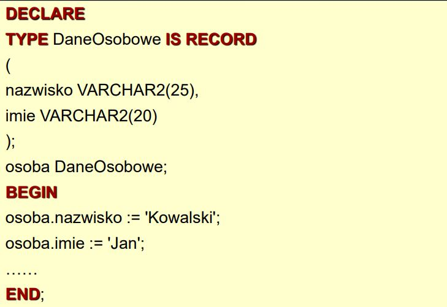
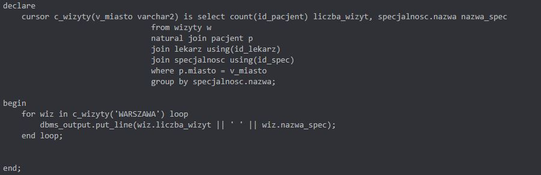
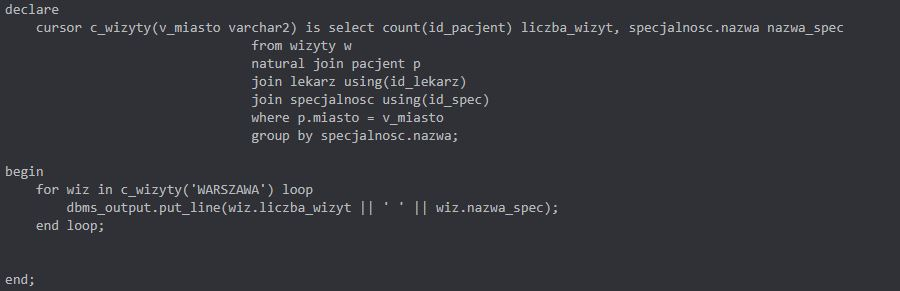

Dokumentacja PL/SQL
PL/SQL umożliwia definiowanie:
- anonimowych bloków programowych
- procedur i funkcji składowanych w bazie danych
- pakietów (bibliotek) procedur i funkcji
Język PL/SQL - korzyści
- prostota wykonania niektórych zadań w stosunku do SQL
- większa wydajność
- dostępność nieobecnych w SQL mechanizmów
- stałe, zmienne
- struktury sterujące
- obsługa wyjątków
- łatwość przenoszenia pomiędzy platformami, na które
oferowany jest Oracle (kod wykonywany na serwerze)
- możliwość wykorzystania predefiniowanych pakietów
Zmienne:
- Zmienne służą do przechowywania wyników zapytań i
obliczeń w celu ich późniejszego wykorzystania
- Wszystkie zmienne muszą być zadeklarowane przed ich
użyciem
- Każda zmienna posiada typ - takie same typy jak w SQL
- Zmienne deklaruje się w sekcji DECLARE
- Mamy zmienne:
- proste – liczba, łańcuch znaków, data, wartość
logiczna
- złożone – rekord, tablica, obiekt
- Dostępne w bloku deklaracji i blokach zagnieżdżonych
- Przykład deklaracji:
- Zmienna niezainicjalizowana ma wartość pustą
- Sposoby inicjalizowania zmiennej:
- przypisanie wartości (:= operator przypisania)
- określenie wartości domyślnej – (DEFAULT)
- Można wymusić obowiązkowość wartości (NOT NULL)
Zmienna rekordowa:
- PL/SQL posiada zmienne strukturalne nazywane
rekordami - podzielone są na pola, z których każde
posiada nazwę i typ
- Sposób deklaracji zmiennej rekordowej:
- zdefiniowanie typu rekordowego
- zdefiniowanie zmiennej typu rekordowego
- W programie używane przez dostęp kropkowy
- Przykład użycia:

Atrybuty obiektów
- Wszystkie obiekty posiadają atrybuty
- Atrybut %TYPE służy do deklaracji zmiennej prostej na
podstawie typu atrybutu tabeli bazy danych lub typu innej
zmiennej
- Atrybut %TYPE służy do deklaracji zmiennej prostej na
podstawie typu atrybutu tabeli bazy danych lub typu innej
zmiennej
Komunikacja z użytkownikiem

Iteracja - instrukcja LOOP
Iteracja - instrukcja WHILE
Iteracja - instrukcja FOR
Zapytania w PL/SQL
- Zapytanie musi zwrócić dokładnie jeden rekord
- Zapytanie musi zawierać klauzulę INTO z:
- listą zmiennych prostych, których liczba musi
odpowiadać liczbie wyrażeń w klauzuli SELECT
zapytania – obowiązuje również zgodność typów
- zmienną rekordową o strukturze zgodnej ze strukturą
rekordu zwróconego przez zapytanie
- Na końcu polecenia średnik
- Przykład użycia ze zmienną rekordową:
Kursory
- Otwarcie kursora
- Pobieranie rekordów z kursora
- Zamykanie kursora
- Atrybuty kursora
- Przykład użycia:
Pętla FOR z podzapytaniem
Kursory niejawne
- Tworzony automatycznie dla poleceń INSERT, UPDATE,
DELETE i SELECT INTO w programie PL/SQL
- Otwierany bezpośrednio przed wykonaniem polecenia
- Zamykany zaraz po wykonaniu polecenia
- Nazwa kursora: SQL
- Atrybuty kursora niejawnego
- Przykład użycia:
Kolosy
 
